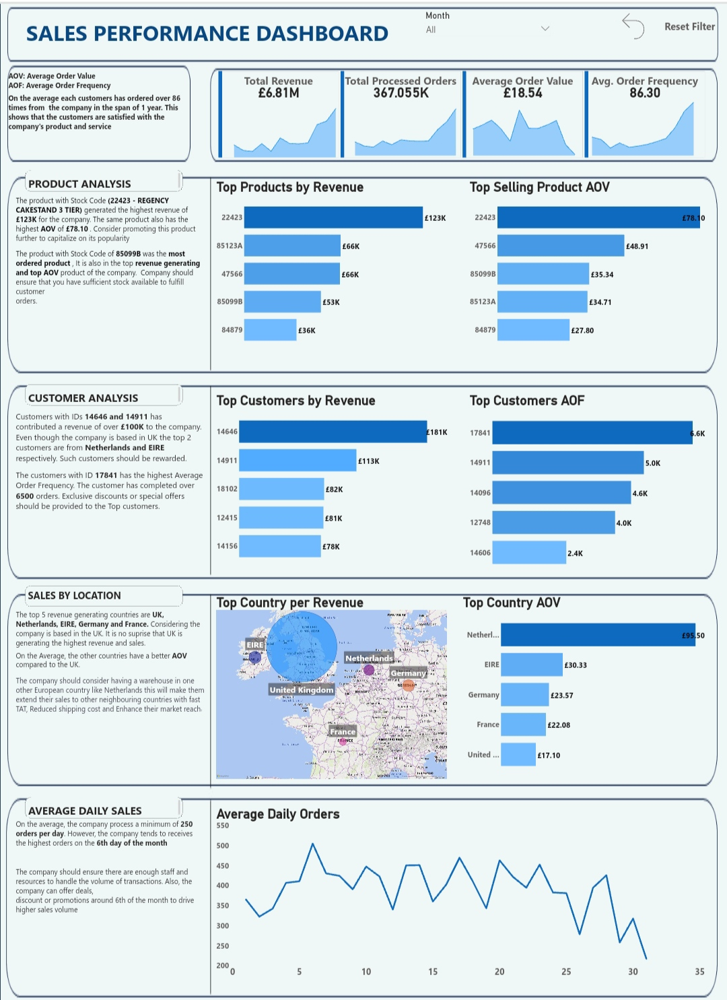

Performed an End-to-End data analytics process building a robust pipeline for data cleaning, integration, and visualization, culminating in an insightful business/sales dashboard that offers performance summary and
actionable insights for growth


Conducted a comprehensive SQL based analysis of Pizza Runner's data to generate insights for Operations efficiency optimization and customer service improvement.

A data-driven analysis using SQL to provide actionable insights for enhancing customer experience and making informed business decisions.
Conducted in-depth analysis and sales forecast of two prominent cab companies in the US, comparing their market dynamics, performance, and customer profiles
to generate actionable insights for investment decision

Conducted comprehensive data wrangling, exploratory data analysis, and feature engineering on the Portuguese bank marketing dataset,
leading to the successful deployment of a predictive model on Streamlit to predict term deposit subscription.

Analyzed a comprehensive sales dataset with Excel to generate valuable insights, build a dynamic and interactive dashboard to answer critical business questions
to make informed data driven decision.

Developed a Machine Learning model with 98% accuracy using Regression technique in Python to predict the value of players in the FIFA 21 dataset,
which contained over 18,000 observations. Used Power BI to create a visually-engaging dashboard for enhanced data exploration and analysis.

Dijkstra and Extended Dijkstra Algorithm were used to solve real-life routing optimization problem for Aeronautical networks:
single-objective and multiple-objectives optimization challenges of 216 airplanes trying to access internet from ground stations (Heathrow Airport (LHR) and Newark Liberty International Airport (EWR))
while maximizing the end-to-end transmission rate and minimizing the end-to-end latency

Performed an exploratory data analysis using python on olympics dataset, The olympics (36,931 rows, 13 columns within the years 1896 to 2014) dataset will be formed from 3 major dataset;
The summer olympics games, the winter olympics games and a df that contains some Economic parameters (population, GDP) of the participating countries